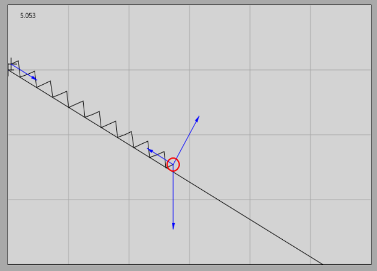
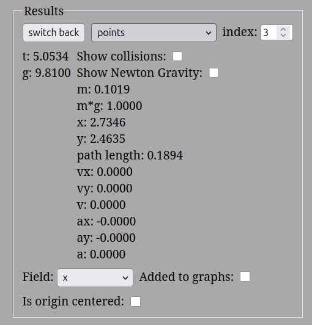
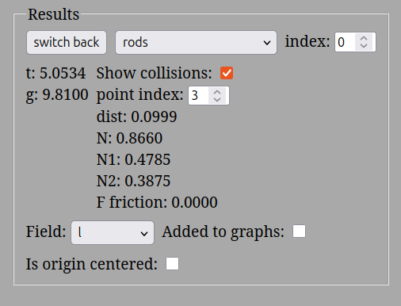

Egyensúlyi állapotban a vizsgált testek sebessége és gyorsulása is nulla. Ez az állapot mindaddig változatlan marad, amíg a testet érő külső hatások meg nem változnak.
Newton második törvénye alapján az egyensúlyban lévő testre ható erők eredője nulla, azaz az eredő erő egy nullvektor:
A vektorok összeadása egy rögzített koordináta-rendszerben az egyes tengelyirányú koordináták előjeles összeadását jelenti. Ezért az egyensúly feltétele komponensenként a következőképpen írható fel:
és
10 N súlyú test egyensúlya 30 fokos lejtőn (Kísérleti videó)
A videóban bemutatott kísérlet két alapvető fizikai tényt demonstrál: 1. A -os lejtőre helyezett súlyú test megtartásához a lejtővel párhuzamos, pontosan nagyságú, felfelé mutató tartóerő szükséges. 2. A lejtő felülete a testre egy arra merőleges, úgynevezett normális vagy kényszererőt fejt ki, amely megakadályozza, hogy a test behatoljon a lejtő anyagába. Ez a merőleges erő jelen esetben kisebb, mint a test teljes súlya.
Ha ezt a két kényszererőt pontosan ugyanekkora és ugyanolyan irányú külső erőkkel (például két rugós erőmérővel) helyettesítjük, maga a lejtő el os távolítható: a test továbbra is tökéletesen egyensúlyban lebeg a térben. Ez bizonyítja, hogy a két komponens pontosan kiegyenlíti a test függőlegesen lefelé mutató súlyát.
1 N súlyú test 30 fokos lejtőn interaktív szimulátor
A szimuláció során egy lejtővel párhuzamosan beállított rugó tartja egyensúlyban a -os, tökéletesen súrlódásmentes lejtőre helyezett súlyú testet. Az indítást követően a rugó kismértékben megnyúlik, majd néhány másodperces lecsengő oszcilláció után beáll a statikus egyensúly. A szoftver mérései alapján a rugó által kifejtett párhuzamos erő , a lejtő által biztosított merőleges kényszererő pedig . Ezek az értékek pontosan a tizedei a kísérletben látottaknak, hiszen a vizsgált test súlya is hajszálpontosan a tizede a korábbinak.




A rugó jellemzőinek időbeli stabilizálódását az alábbi grafikon szemlélteti:
A piros görbe a rugó aktuális hosszát, míg a zöld görbe a rugalmas erő időbeli alakulását mutatja.
Jelöljük a testre ható nehézségi erőt -vel, a lejtő felülete által kifejtett merőleges kényszererőt -val, a lejtővel párhuzamos megtartó erőt (amely megakadályozza a lecsúszást) pedig -fel. Vegyünk fel egy olyan koordináta-rendszert, amelynek -tengelye a lejtő síkjával párhuzamosan lefelé, az -tengelye pedig a lejtőre merőlegesen, a kényszererő irányába mutat!
Mivel a test egyensúlyban van, a három erő vektori összege nullvektor:
Írjuk fel a vektoregyenletet tengelyirányú komponensekre bontva:
A felvett tengelyirányok alapján az és erők koordinátái a következők:
A függőlegesen lefelé mutató nehézségi erőt fel kell bontanunk a lejtő síkjával párhuzamos , valamint a lejtőre merőleges komponensekre. Ha berajzoljuk a felbontáshoz szükséges derékszögű háromszöget, geometriailag belátható, hogy a lejtő hajlásszöge pontosan a lejtővel párhuzamos komponenssel szemközti szögként jelenik meg. Ennek oka, hogy a szög szárai merőlegesek a lejtő alapszögének száraira, és a merőleges szárú hegyesszögek egymással egyenlők.
A szögfüggvények definíciója alapján felírható:
Hasonlóan a merőleges komponensre:
A koordináta azért kapott negatív előjelet, mert iránya a választott -tengellyel (és így a kényszererővel) ellentétes. Helyettesítsük be ezeket a komponenseket a kiindulási egyensúlyi egyenletekbe:
Az egyenletek átrendezésével megkapjuk a lejtőn ható erők alapvető képleteit:
Ha a test súlya és a lejtő hajlásszöge , akkor a képletek alapján:
Mivel a kényszererő és a párhuzamos tartóerő egymásra merőlegesek, ellenőrzésképpen határozzuk meg a vektori összegük nagyságát a Pitagorasz-tétel segítségével:
A levezetett és erők vektoriális eredője számszerűen pontosan egyenlő a testre ható nehézségi erővel, az iránya pedig függőlegesen felfelé mutat. Így ezek a külső erők együttesen tökéletesen kiegyenlíthetik a gravitációt, ahogyan azt a fizikai valóságban is tapasztaljuk.
A feladatok során a felületek közötti súrlódás mindenütt elhanyagolható, a nehézségi gyorsulás értéke pedig .